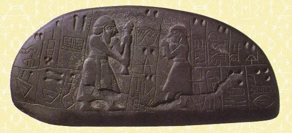
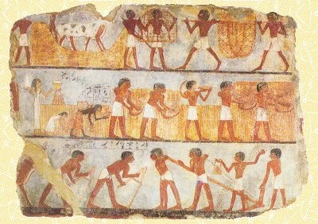
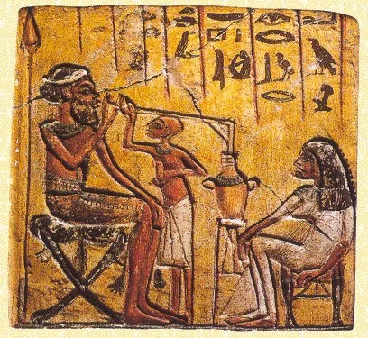

Los Orígenes de la cerveza
La cerveza en la prehistoria
La cerveza hunde sus raíces en la noche de los tiempos y con toda seguridad es anterior incluso a la presencia del hombre sobre la tierra. Unos granos caídos sobre una piedra ahuecada, una lluvia fina, luego unos días tibios y el milagro de la fermentación produce el primer antecedente de lo que hoy conocemos por cerveza.

Miles de años después, ya en pleno neolítico, cuando el hombre empieza a dar los primeros pasos en torno al pastoreo y a la agricultura se desarrollarán lentamente procesos para elaborar cerveza.
En Sumer, en el centro de la Baja Mesopotamia, entre los ríos Éufrates y Tigris, los cereales crecían de forma natural. Mientras los varones se dedicaban a la caza y al pastoreo incipiente, las mujeres se ocupaban de la recolección de frutos y semillas, almacenando determinados granos para las épocas de climatología adversa. Y un día, accidentalmente, un recipiente de cebada se llenó de agua y estropeó el grano en ella almacenado. La escasez de medios seguramente obligó a ingerir de todos modos aquel brebaje inesperado. Quienes bebieron se debieron de sentir gratamente confortados, llenos de una euforia extraña, con una alegría inexplicable. Ese debió de ser el momento en que el hombre primitivo descubrió tan maravilloso caldo.
Pronto observó que la molienda del grano facilitaba el proceso de la fermentación. Así, mujeres, ancianos y niños masticaban afanosamente los granos de la cebada para machacarlos y para, sin saberlo, facilitar con su saliva los complejos procesos de actuación de las levaduras.
Esa primera cerveza debió de ser una especie de sopa pardusca, algo ácida, pero muy nutritiva y vigorizante. No obstante, por restos encontrados en vasijas de barro se sabe que se afanaron por mejorar, si no la presencia, sí el sabor de su bebida, y pronto endulzaron la cerveza con miel, jugos de bayas o raíces de plantas. Esa mejora incidió también en la conservación del producto, pues muchas de las hierbas añadidas a la sopa inicial actuaron como antiséptico.
Durante varios milenios la cerveza se obtuvo de este modo, hasta que llegó el pan y con él una nueva forma de fabricarla.
Los sumerios
Dentro ya de la historia, los sumerios, unos 5.000 años antes de Cristo, fueron los primeros que regularon la fabricación de la cerveza. La llamaban sikaru y la consideraban una bebida medicinal y sagrada. No era cristalina y espumosa, como las pilsen actuales, sino opaca y espesa, con restos de granos de cebada en suspensión. En realidad era una especie de sopa espesa con pan, que se dejaba fermentar y a la cual se agregaban miel y hierbas. Después la sorbían con cañas desde un gran recipiente común, sentados a su alrededor. La degustación de cerveza no solo tuvo fines alimenticios y energéticos, sino que además representaba una buena ocasión para mantener relaciones sociales. Incluso los ejércitos llevaban consigo mujeres cerveceras para que proveyesen a la tropa del nutriente caldo.
Tan importante fue la fabricación de la cerveza entre los sumerios y los pueblos vecinos que el monarca babilonio Hammurabi (1728 a 1686 a. C.), famoso por la promulgación de un célebre código que regulaba múltiples e importantes aspectos de la vida de sus súbditos, incluyó en su texto legal varios artículos referentes a esta bebida.

Con ello, la cerveza se convirtió en el primer producto alimenticio que tenía una regulación de calidad. Una regulación que en ningún caso se podía tomar a broma, pues el artículo 108 castigaba con la pena de muerte a aquellas taberneras que cometiesen fraude en la calidad y la cantidad del grano utilizado para la elaboración del apreciado elixir.
La cerveza tenía tanta relevancia económica, social y política, que los sacerdotes quisieron hacérsela suya y le asignaron un origen divino.
Los egipcios
Los egipcios también fabricaron cerveza y supusieron que Osiris, dios de la vegetación y responsable de las benéficas crecidas del Nilo, había sido el encargado de transmitir tan divina receta a los hombres.

A diferencia de la cerveza sumeria, la zythos egipcia era más líquida, posiblemente estaba colada, y no se bebía en recipientes comunales sino en jarras de alabastro. Tuvo una gran trascendencia social, prueba de ello es que uno de los cargos políticos más importantes del imperio era el de copero del faraón.